Class 9. Linear Models in Decision Contexts
- Supplemental background reading for next class(es):
Assignment due: Submit a review of the objectives network randomly assigned to you. See details here
- Group work: Continue discussing potential class projects
- Link to class recording YouTube
Today’s R script Class-09.R
Introduction to linear models
Some preliminaries
- If you want to play along in class download this zipfile *.zip.
- Be sure to unzip it before trying to use files and such
- The file contains the dataset used in class and an R script of all the code.
- Once you have it where you want open the R script and be sure to check the working directory
getwd()and make sure it is where your folder is.
- If your working directory is not correct, you can set it in Rstudio: “Session –> Set Working Directory –> To source file location”. Or you can use the
setwd()in the console.
Objectives
- Understand the difference between predicting and evaluating effects
- Understand prediction and quantifying uncertainty
- Parameters of linear models
Prediction versus effect
Decisions require some prediction of an outcome and there is uncertainty surrounding the potential outcome. In order to make predictions we need some sort of estimator. This can be as simple as a calculating the mean of some data that can be used to estimate the expected outcome. However we need to account for uncertainty in the expected outcome. This can be done by incorporating a statistical model that links the data to the expectation including uncertainty.
Let’s get a better idea of what we mean here. Suppose we have 20 observations of weights for a critter. While we never know what the true mean and variance is, unless we perform a full census, we can easily simulate a known mean and standard deviation in R. Let’s assume that weights are normally distributed, for now.
weight_mn<- 145
weight_sd<- 10
n<- 150 # number of samples
weights<- rnorm(n,weight_mn,weight_sd)
weights # lets look at the weights## [1] 146.8534 140.8239 156.9790 137.9831 146.5624 159.4970 148.9718
## [8] 144.6731 132.8170 129.4111 144.5396 139.3867 141.0547 134.5978
## [15] 144.2618 124.5617 145.2259 146.3573 149.7917 164.4086 149.8080
## [22] 153.9405 148.5945 128.1777 131.0202 142.5441 128.1211 143.9570
## [29] 149.2118 139.7285 129.2927 145.4583 125.2565 152.9082 139.2794
## [36] 140.4336 158.7335 122.3629 131.2571 146.2125 148.0184 144.4371
## [43] 153.3248 141.5338 161.2394 131.7189 150.4894 144.5961 136.2260
## [50] 146.3887 121.6687 141.9772 139.0761 137.4558 137.0890 150.9400
## [57] 149.0710 149.5173 153.9419 131.4547 139.3586 132.8737 141.8171
## [64] 149.4819 151.1753 157.0645 139.6318 138.7533 139.0923 157.4696
## [71] 142.2221 116.8562 138.9960 140.7563 148.2737 151.1528 149.3848
## [78] 132.1028 135.9035 142.8178 145.0717 151.1759 158.9637 131.8393
## [85] 143.4099 147.5105 140.9223 149.1656 138.3462 139.8819 147.7014
## [92] 149.3229 151.0863 138.4032 147.0305 131.7070 145.1965 146.4015
## [99] 159.0815 137.2256 142.1400 143.8121 149.0388 152.9342 158.5867
## [106] 149.2300 170.1684 140.4124 167.7040 142.7311 132.3707 140.7432
## [113] 140.2773 141.4627 150.7655 141.8342 131.6895 135.9873 140.8156
## [120] 137.7832 154.0448 128.6677 133.2663 154.0743 142.4447 135.8630
## [127] 130.0791 129.0127 152.6961 153.1464 143.1231 150.6809 146.7592
## [134] 146.8015 127.0836 141.1929 145.7246 133.1955 140.2890 146.7682
## [141] 154.8844 154.1466 144.7281 144.1029 141.3937 152.3769 148.9090
## [148] 147.3706 133.0492 142.0881Now we can look at the distribution of weights.
hist(weights)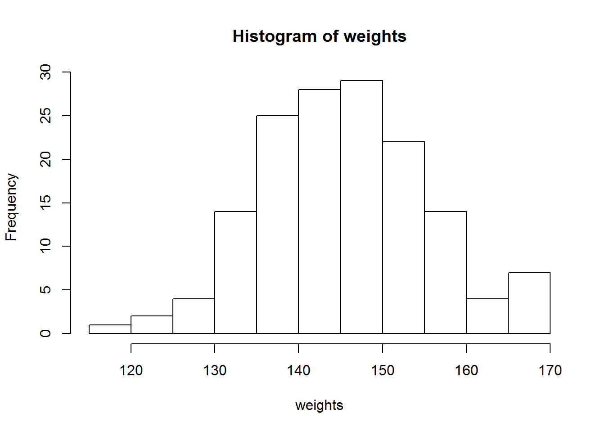
Cool, that looks normal, it should, we generated it from a normal distribution. Using those 15 observations of weight we can estimate the mean as \(\mu = \frac{1}{n}\cdot\sum_{i=1}^n Weight_i\).
The standard deviation is the square root of the average of the squared deviations from the mean and calculated as \(\sigma =\sqrt{\frac{1}{n} \cdot\sum_{i=1}^n (Weight_i-\mu)^2}\)
Fortunately R has some built in functions to calculate the mean (\(\mu\)) and standard deviation (\(\sigma\)).
# the mean
mean(weights) # should be close to 145## [1] 143.3886# the standard deviation
sd(weights) # should be close to 10## [1] 9.286945Well this is great we can take several observations and calculate an expectation (\(\mu\)) and the uncertainty (\(\sigma\)). In most cases when we are doing science, we are interested in calculating the mean and seeing if it is different than another. But in decision making, we are more interested in estimating the expected value and the uncertainty. Arguably, we did just that by estimating the mean and the standard deviation using the formulas above. But that will only work for so long as problems get more complex.
Let’s reframe the mean estimate as a linear model. The linear model for a mean is
\[\mu = \beta_0\]
So in this case \(\beta_0\) is the intercept of the linear model. To be clear this base linear model gives us the expected outcome. The model can be fit by ordinary least squares using the lm() function in R.
Let’s give that a shot.
fit<- lm(weights~1)
# THE SUMMARY OF THE LINEAR MODEL
# THE INTERCEPT IS VERY CLOSE TO THE MEAN WE CALCULATED PREVIOUS
summary(fit)##
## Call:
## lm(formula = weights ~ 1)
##
## Residuals:
## Min 1Q Median 3Q Max
## -26.5324 -5.0282 0.2224 5.9110 26.7798
##
## Coefficients:
## Estimate Std. Error t value Pr(>|t|)
## (Intercept) 143.3886 0.7583 189.1 <2e-16 ***
## ---
## Signif. codes: 0 '***' 0.001 '**' 0.01 '*' 0.05 '.' 0.1 ' ' 1
##
## Residual standard error: 9.287 on 149 degrees of freedomLet’s confirm that the estimated mean is pretty darn close to the estimate of the the intercept. In order to accomplish this we need to extract the estimate of the intercept from the model output. The lm() function returns an object that is a list. Let’s confirm the output is a list.
typeof(fit)## [1] "list"Good, just as we thought it was a list object. Now the hassle is getting the estimate of the intercept out of the list. Why is this a hassle? Well lists are ragged, they can house vectors, data.frames, and matrices. So they are very flexible in their ability to store data, they can be a bit tricky to get data out of. In this case we need to get the coefficients estimated by the model. We can use the names() function to get a list of the named objects in fit.
names(fit)## [1] "coefficients" "residuals" "effects" "rank"
## [5] "fitted.values" "assign" "qr" "df.residual"
## [9] "call" "terms" "model"There it is, I see an object named coefficients, let’s see if we can get it using the $.
# THE VECTOR OF COEFFICIENTS
fit$coefficients## (Intercept)
## 143.3886We can assign the coefficient as an object called beta0.
beta0<- fit$coefficientsand we can see how different the mean and the intercept are.
mean(weights)-beta0## (Intercept)
## -2.842171e-14Well that is a very small number, well within rounding error.
So I have made the case that the linear model does the same thing as the mean equation. But in all the output I do not see any value for uncertainty? Let’s double check and make sure we didn’t miss it. We can look at the object itself or use summary() to have R spit out formatted output.
fit##
## Call:
## lm(formula = weights ~ 1)
##
## Coefficients:
## (Intercept)
## 143.4summary(fit)##
## Call:
## lm(formula = weights ~ 1)
##
## Residuals:
## Min 1Q Median 3Q Max
## -26.5324 -5.0282 0.2224 5.9110 26.7798
##
## Coefficients:
## Estimate Std. Error t value Pr(>|t|)
## (Intercept) 143.3886 0.7583 189.1 <2e-16 ***
## ---
## Signif. codes: 0 '***' 0.001 '**' 0.01 '*' 0.05 '.' 0.1 ' ' 1
##
## Residual standard error: 9.287 on 149 degrees of freedomLet’s check the list elements again using the names() function.
names(fit)## [1] "coefficients" "residuals" "effects" "rank"
## [5] "fitted.values" "assign" "qr" "df.residual"
## [9] "call" "terms" "model"I don’t see anything, where the heck is the uncertainty? Well, it is hidden in the summary. To get at it, we need to create an object object of the model fit summary.
output<- summary(fit)
names(output)## [1] "call" "terms" "residuals" "coefficients"
## [5] "aliased" "sigma" "df" "adj.r.squared"
## [9] "r.squared" "cov.unscaled"Ohhh, there it is, I see an object named sigma. Let’s get a hold of that estimate. It should be close to 10, the value we generated from.
# SHOULD BE RIGHT ABOUT 10
output$sigma## [1] 9.286945It was pretty close to the estimate of the standard deviation of the sample.
sd(weights)-output$sigma## [1] -1.776357e-15Again a very small number, well within rounding error.
Ok, now we have 2 things that we need, the expectation (i.e., \(\mu\)) that was estimated by \(\beta_0\) and the uncertainty (i.e., \(\sigma\)).
There are 2 things I want to highlight here. 1) we have a model that generates an expected outcome and 2) we have quantified uncertainty in that outcome. Now, this can be formalized as the linear model below:
\[Y_i=\beta_0 + \epsilon_i \text{ (eq. 3)} \]
where * \(Y_i\) are the observed values * \(\beta_0\) is the mean value, and * \(\epsilon\) is a normally distributed value with mean 0 and standard deviation of \(\sigma\).
This is likely the model you were taught in biometry or statistics. A different way to think about the linear model to to first think of it as a predictive model as:
\[\mu = \beta_0 \text{ (eq. 4)}\]
and then link the prediction to data using a statistical model to account for uncertainty as:
\[Y_i \sim Normal(\mu,\sigma). \text{ (eq. 5)}\].
Notice that equation 4 and 5 are linked by the prediction \(\mu\) and the statistical model links the data to the expectation incorporating uncertainty.
Don’t quite believe me? Let’s do a quick simulation to see if we generate data from the 2 different approaches they are in fact that same.
First let’s generate some data using equation 3 where \(\mu\) and \(\sigma\) are as defined above. We are going to do this for many observations as it will approximate the exact solution. So, for this demonstration we will generate 500,000 observations from each approach and compare them.
n<- 500000
weights_sim1<- weight_mn + rnorm(n,0,weight_sd)
mean(weights_sim1)## [1] 145.0048sd(weights_sim1)## [1] 10.01375Now let’s try the second approach.
weights_sim2<- rnorm(n,weight_mn,weight_sd)
mean(weights_sim2)## [1] 144.9935sd(weights_sim2)## [1] 10.01165Both approaches return estimates of the mean and standard deviation that are very close to the true value of 145 and 10. And both distributions look the same, illustrated below using the hist() function.
hist(weights_sim1)
hist(weights_sim2)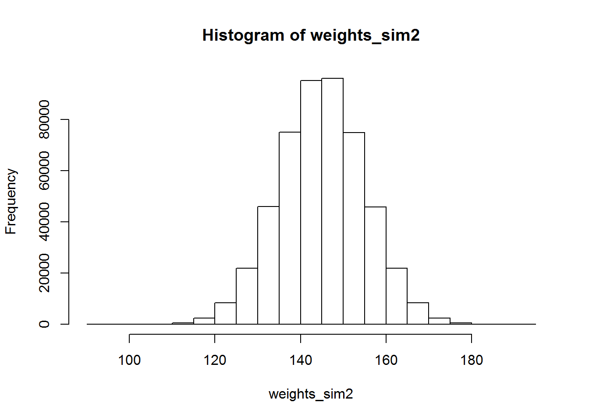
Thinking about predictions from models and using data to estimate parameters and uncertainty makes a bit more sense using the second approach (i.e., eq. 4 and 5), especially in a decision context and when we start to deal with distributions that are not normally distributed (e.g., binomial, Poisson).
Furthering linear models
Linear models are the basis for many ecological analyses that can be used to predict outcomes and used in decision models. We are still working on values that are assumed to be normally distributed but we will soon see how linear model are the basis for generalized linear models. Up to now we have used the linear model to predict the most likely outcome for a sample weights (i.e., the mean) and the uncertainty around the outcome. Rarely are problems this easy, typically we have to include some other factors that we believe help reduce uncertainty. See, that was subtle right? The idea of explanation versus the idea of reducing uncertainty. That gets at the different mindset between explanation (science) and prediction (decision making).
Let’s work with a more concrete example. Suppose there is an invasive critter (e.g., hogs, carp) that damages habitat. Folks have gone out and quantified the amount of habitat area destroyed and related the amount destroyed to the abundance of invasive critters. But we also know that the size of the habitat area effects the area destroyed. Specifically, the critter will destroy larger habitats if there is more habitat but also with increasing critter abundance. In Netica this relationship of habitat area and abundance on area destroyed looks like this.
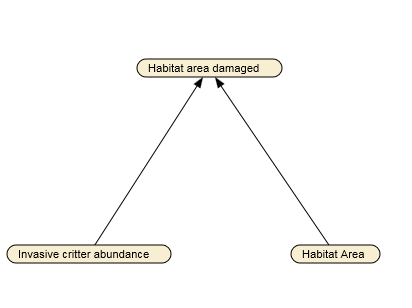
Some stakeholders were nice enough to share data they had been collecting to quantify damage.
Let’s read in the data they provided and take a gander at it. We can read in a comma separated file (*.csv) using the read.csv() function.
# THIS WILL READ IN THE CSV FILE FROM YOUR WORKING
# DIRECTORY
damage_dat<- read.csv("damage-data.csv")
damage_dat## habitat_area group_size area_damaged
## 1 106 12 20.5
## 2 134 35 45.9
## 3 143 31 46.2
## 4 40 49 25.5
## 5 61 43 15.4
## 6 72 35 16.0
## 7 42 6 -1.9
## 8 72 41 17.1
## 9 49 15 4.1
## 10 65 33 15.1
## 11 57 43 23.0
## 12 82 4 6.1
## 13 124 25 31.2
## 14 95 6 21.3
## 15 144 18 30.7
## 16 150 21 28.7
## 17 93 17 31.4
## 18 84 4 7.6
## 19 63 49 23.5
## 20 138 24 32.0
## 21 145 20 31.0
## 22 130 34 38.6
## 23 79 10 18.4
## 24 91 16 26.1
## 25 106 35 31.4
## 26 181 5 19.5
## 27 52 31 11.1
## 28 75 27 16.3
## 29 37 45 9.4
## 30 128 3 18.2
## 31 193 42 68.1
## 32 188 40 63.6
## 33 101 37 33.5
## 34 143 16 27.2
## 35 39 47 19.6
## 36 115 18 19.4
## 37 174 28 51.7
## 38 53 46 25.1
## 39 167 24 44.7
## 40 45 3 10.2
## 41 122 22 32.4
## 42 114 6 19.8
## 43 105 17 21.6
## 44 82 28 25.3
## 45 173 32 54.9
## 46 92 32 36.6
## 47 80 7 8.3
## 48 60 25 17.0
## 49 78 10 9.8
## 50 113 40 38.9
## 51 60 40 23.6
## 52 38 19 15.3
## 53 123 48 44.4
## 54 119 47 39.1
## 55 61 39 23.6
## 56 126 6 11.4Ok, we have 56 observations (rows) and 3 columns. The columns are habitat_area, group_size, and area_damaged. We can use R to plot the data and get a feel for what is going on. Let’s look at the relationship between the area damaged and the habitat area using the plot() function.
plot(area_damaged~habitat_area, damage_dat)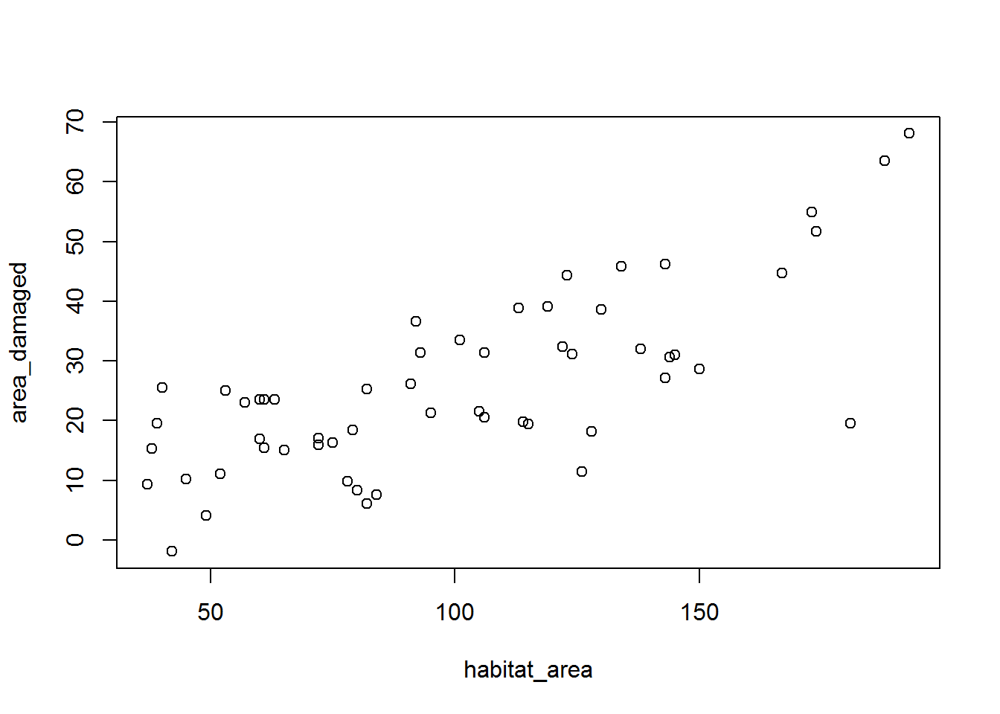
Cool, we made a plot, print it and hang in on your fridge. Maybe a sweet valentines day gift? The plot() function takes a formula, in this case area_damaged~habitat_area and a data.frame, which we read in from a *.csv file and saved as the object damage_dat. The formula notation is convient is common throughout R where response values are to the left of the ~ and independent variables are to the right. But that plot looks like garbage. What is going on with the axs labels? I hate y-axis numbers that are not perpendicular to the x-axis. Let’s fix those.
plot(area_damaged~habitat_area, damage_dat,
xlab="Habitat area (ha)",
ylab="Area damaged (ha)",
las=1) # make y-axis labels perpendicular to x-axis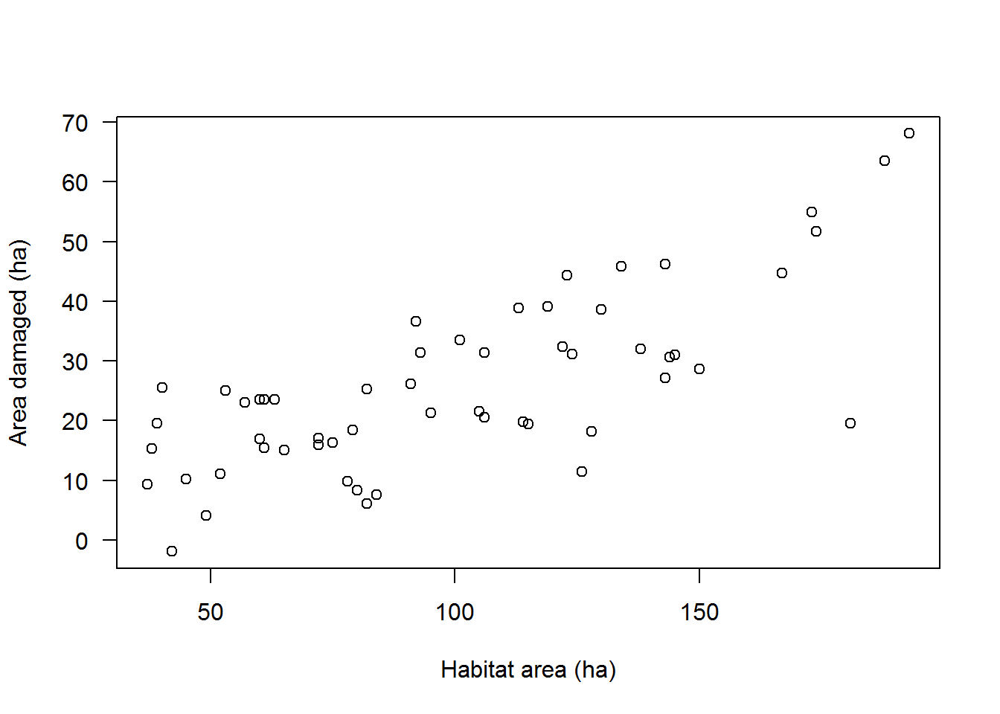
Ok, that is better, there are many ways to customize publication quality figures in R. Note, this may make me a dinosaur but I prefer vanilla R graphics over the graphics produced by R packages like ggplot. Likely personal preference here but I have yet to see those type of figures published in mainstream ecology journals. The figure above looks pretty good, the relationship looks linear (i.e., a straight line with habitat_area.
Let’s check out the other variable we had group_size.We can modify the code above to get the plot of area damaged versus group size.
plot(area_damaged~group_size, damage_dat,
xlab="Group size (#)",
ylab="Area damaged (ha)",
las=1)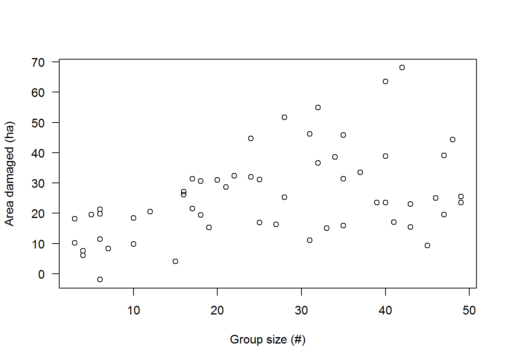
Just for grins let’s see if we can see an interaction of group size and habitat area. This would suggest that as group size and area increases then the area damaged increases. One way to do this is to use our first plot where we plotted area damaged versus habitat area. We can then scale the points to be related to group size such that larger points represent damage by larger group sizes. Make sense?
We first thing we need to do is make a scale for our points. We can do this by scaling the group size using our proportional scoring equation.
damage_dat$group_size_scl<- (damage_dat$group_size-0)/(max(damage_dat$group_size)-0)I used a 0 in the equation above to preclude any 0 values for the scaled group sizes. We can now use these new values as the size of the points in the plot using the cex argument in plot.
plot(area_damaged~habitat_area, damage_dat,
xlab="Habitat area (ha)",
ylab="Area damaged (ha)",
las=1,
cex=damage_dat$group_size_scl)# point sizes scaled to group size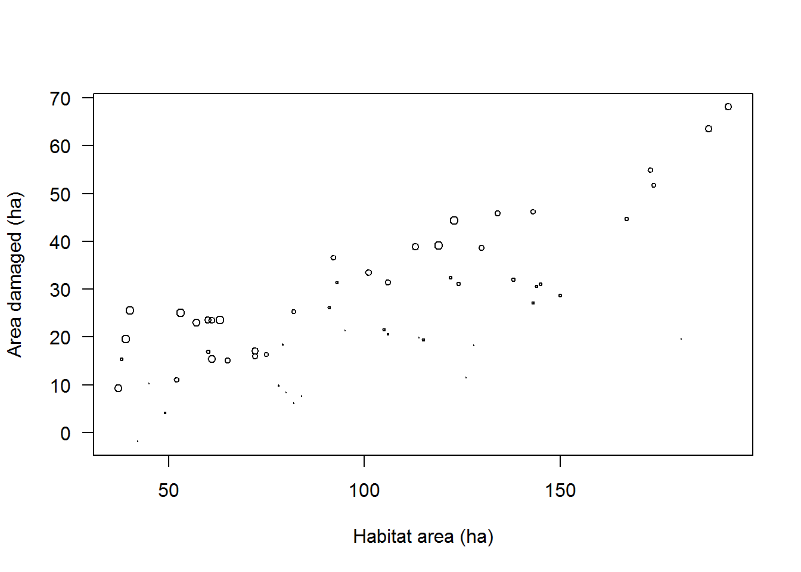
Boy those points are difficult to view. Let’s make them 2x as big.
plot(area_damaged~habitat_area, damage_dat,
xlab="Habitat area (ha)",
ylab="Area damaged (ha)",
las=1,
cex=damage_dat$group_size_scl*2)# double the scale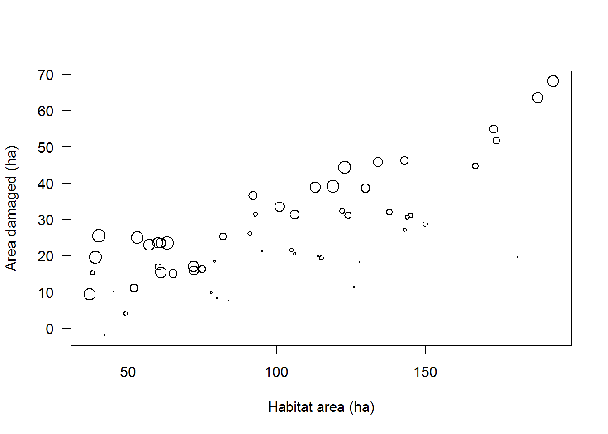
That is better. Looks like some interaction is present. The larger points are on the top of the cloud of points. If they were randomly distributed throughout it would be suggestive of no interaction.
Predicting area damaged from a linear model
Recall from above where I made the case for thinking about models a bit differently than in equation 3. Suppose we want to fit a linear model to the data. the plot suggested there might be an interaction, so let’s go ahead and fit a model that includes the parameters:
- Intercept ($_0}
- Effect of habitat area (\(\beta_1\))
- Effect of group size (\(\beta_2\))
- Interaction of habitat area and group size (\(\beta_3\))
The 4 parameters are put together as a linear model to predict the area damaaged as:
\[\mu = \beta_0 + \beta_1 \cdot \text{Habitat area} + \beta_2 \cdot \text{Group size} + \beta_3 \cdot \text{Habitat area}\cdot\text{Group size. (Eq. 6)}\]
Ok, we have a model that will predict the amount of area damaged given habitat area, group size, and the interaction of the 2. Now we need to link the predictions to the observed data by a statistical model to quantify uncertainty. If we assume the observations are normally distributed around the prediction (i.e., normally distributed residuals) the statistical model is:
\[\text{Area damage}_i \sim Normal(\mu, \sigma) \text{ (Eq. 7)}\]
One of the assumptions to the linear model is that the predictor variables are not correlated. It is always go to check this and make sure. We can do this visually with a plot.
plot(group_size~habitat_area, damage_dat,
xlab="Habitat area (ha)",
ylab="Group size (#)",
las=1)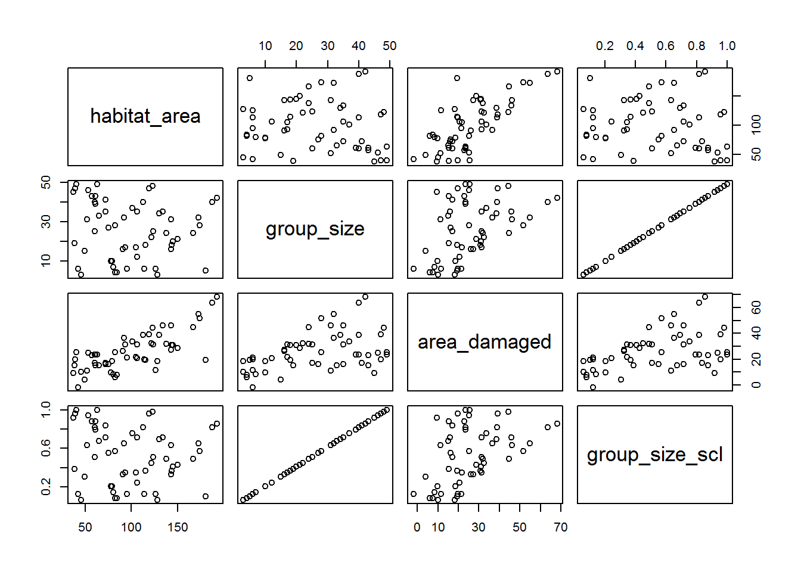
That looks good. No clear pattern. R also has a nice built in function pairs() that evaluates a data.frame. Let’s try it out.
pairs(damage_dat)We can fit that model using the lm() function again. This gets a bit more complicated because we have to specify the model unlike before where we just specified the intercept. Simlar to plot() we will use formula notation that has the syntax Y ~ X1 + X2 + X1:X2. The X1:X2 use specifies the interaction we were looking at. Let’s give this thing a shot and fit the model.
fit<- lm(area_damaged~habitat_area+group_size+habitat_area:group_size,
data=damage_dat)It is always good to look at the model diagnostics to make sure you are not violating assumptions before you peek at the results. Fortunately R has a nice built in diagnostic plot for linear models to evaluate assumptions. It spits out 4 plots: 1) residuals vs. fitted - should be centered around 0, 2) a Q-Q normal plot - should fall along a 1:1 line with some wiggle at the end, 3) a scale location plot - good for identifying outliers, and 4) a plot of the residuals vs. leverage - useful for identifying points that are overly influential on parameter estimates (i.e., outliers at the extremes).
plot(fit)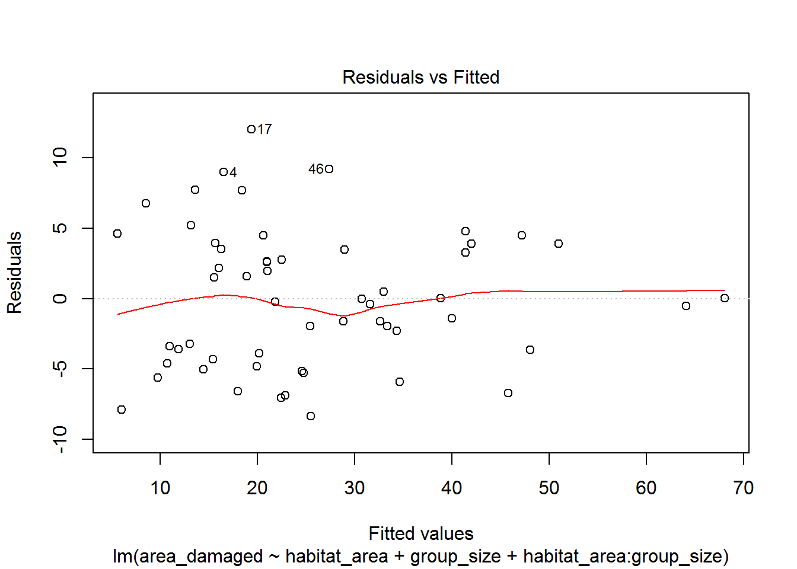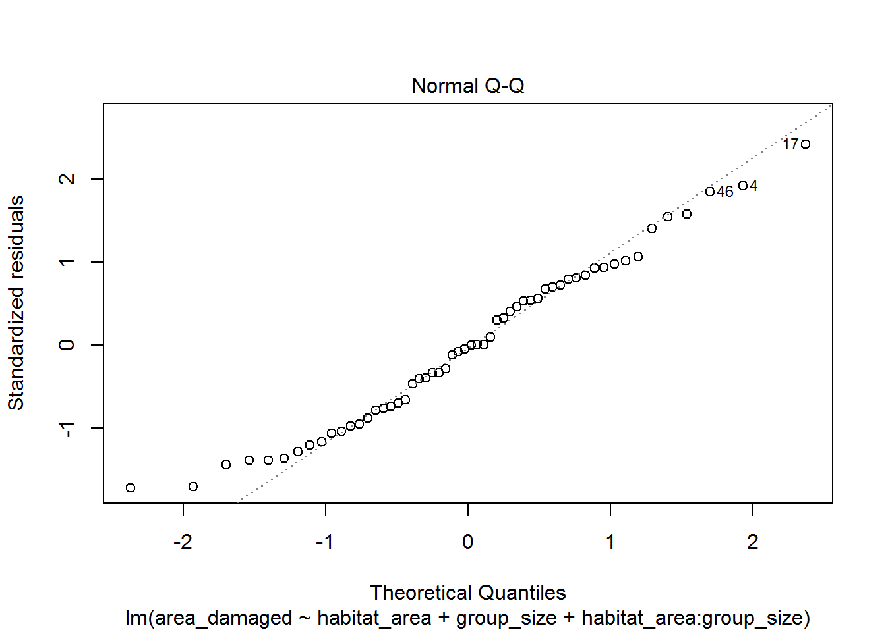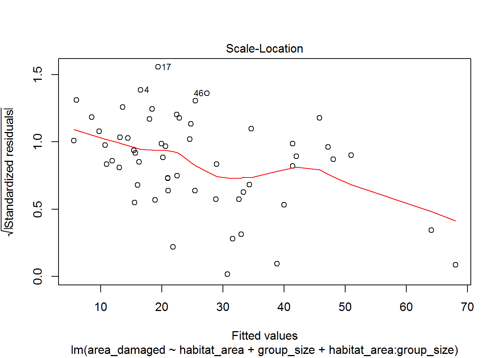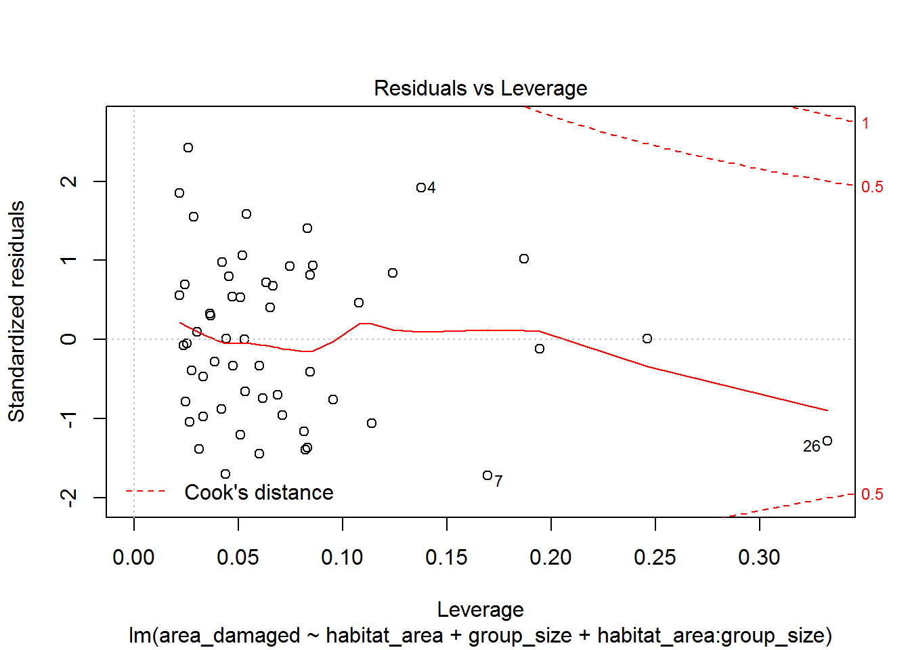
I also like to look at a plot of observed vs. fitted to evaluate whether the model is linear - should be around a 1:1 line if it is. I can extract the fitted values using the fitted() function and add them to our data.frame damage_dat.
damage_dat$fitted <- fitted(fit)
plot(area_damaged~fitted,data=damage_dat)
abline(0,1)# add a 1:1 line for comparison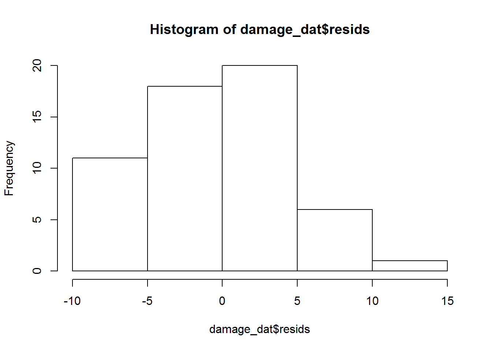
Well that looks legit, but not too legit to quit just yet. I also liek to look at a histogram of the residuals to see if they are normally distributed. But to do that we need to extract our residuals like we did before using the fitted() function but this time using the resid() function.
damage_dat$resids <- resid(fit)
hist(damage_dat$resids )Looks good, centered around 0. We evaluated the assumptions of the linear model which were:
- The response is linearly related to the model
- Error had mean 0 and was normally distributed
- The residuals were homoscedastic (constant variance, no fanning)
- No autocorrelation
Ok, now that all that is done, we can look at our results, get the model coefficients, and estimate of uncertainty.
summary(fit)##
## Call:
## lm(formula = area_damaged ~ habitat_area + group_size + habitat_area:group_size,
## data = damage_dat)
##
## Residuals:
## Min 1Q Median 3Q Max
## -8.3736 -3.9930 -0.1198 3.6223 12.0287
##
## Coefficients:
## Estimate Std. Error t value Pr(>|t|)
## (Intercept) -0.134376 3.813019 -0.035 0.97202
## habitat_area 0.108447 0.036689 2.956 0.00468 **
## group_size 0.022760 0.114263 0.199 0.84289
## habitat_area:group_size 0.005714 0.001148 4.978 7.43e-06 ***
## ---
## Signif. codes: 0 '***' 0.001 '**' 0.01 '*' 0.05 '.' 0.1 ' ' 1
##
## Residual standard error: 5.027 on 52 degrees of freedom
## Multiple R-squared: 0.8874, Adjusted R-squared: 0.8809
## F-statistic: 136.6 on 3 and 52 DF, p-value: < 2.2e-16betas<- summary(fit)$coefficients
betas## Estimate Std. Error t value Pr(>|t|)
## (Intercept) -0.134376165 3.813019328 -0.03524141 9.720222e-01
## habitat_area 0.108446674 0.036688980 2.95583780 4.678269e-03
## group_size 0.022760150 0.114262567 0.19919165 8.428897e-01
## habitat_area:group_size 0.005713618 0.001147678 4.97841501 7.427185e-06sigma<- summary(fit)$sigma
sigma## [1] 5.027126Putting it together
Using the values from above we have our predictive model:
\[\mu = -0.13 + 0.108 \cdot \text{Habitat area} + 0.023 \cdot \text{Group size} + 0.0057 \cdot \text{Habitat area}\cdot\text{Group size. (Eq. 8).}\]
And we have our statistical model that links the predictions to the data and quantifies uncertainty.
\[\text{Area damage}_i \sim Normal(\mu, 5.027) \text{ (Eq. 9)}\]
The whole thing can be put into Netica where you can propagate the uncertainty in the decision making process!
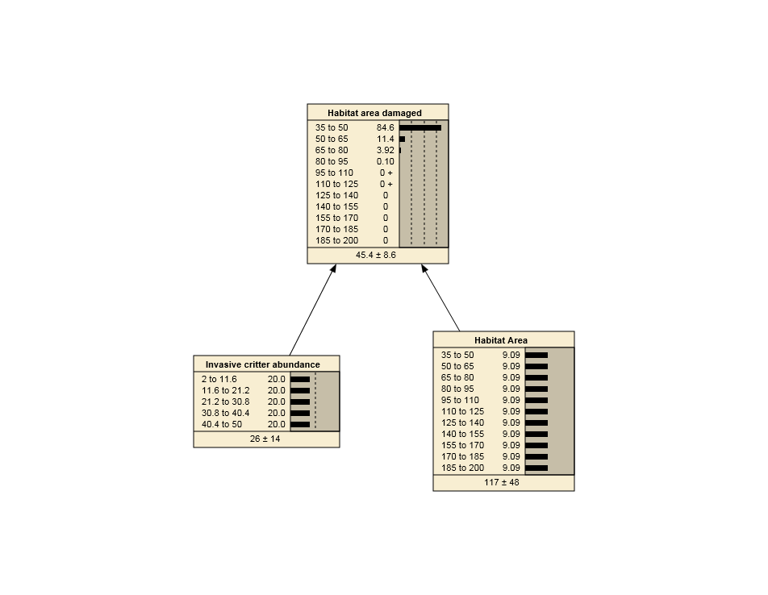